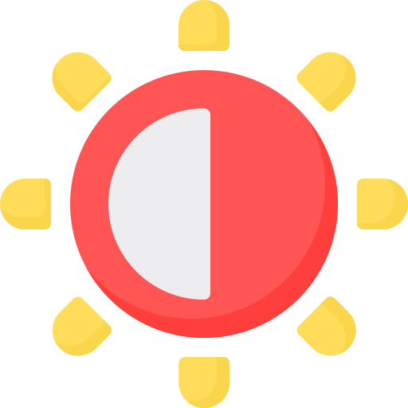

<button (click)="onConfigButtonClick()"
        *ngIf="false" class="layout-config-button p-link" type="button">
  <i class="pi pi-cog"></i>
</button>

<p-sidebar [(visible)]="visible"
           [transitionOptions]="'.3s cubic-bezier(0, 0, 0.2, 1)'"
           position="right"
           styleClass="layout-config-sidebar w-20rem">

  <h5>Scale</h5>
  <div class="flex align-items-center">
    <button (click)="decrementScale()" [disabled]="scale === scales[0]"
            class="p-button-text p-button-rounded w-2rem h-2rem mr-2" icon="pi pi-minus"
            pButton type="button"></button>
    <div class="flex gap-2 align-items-center">
      <i *ngFor="let s of scales" [ngClass]="{'text-primary-500': s === scale}" class="pi pi-circle-fill text-300"></i>
    </div>
    <button (click)="incrementScale()" [disabled]="scale === scales[scales.length - 1]"
            class="p-button-text p-button-rounded w-2rem h-2rem ml-2" icon="pi pi-plus"
            pButton
            type="button"></button>
  </div>

  <ng-container *ngIf="!minimal">
    <h5>Menu Type</h5>
    <div class="field-radiobutton">
      <p-radioButton [(ngModel)]="menuMode" inputId="mode1" name="menuMode" value="static"></p-radioButton>
      <label for="mode1">Static</label>
    </div>
    <div class="field-radiobutton">
      <p-radioButton [(ngModel)]="menuMode" inputId="mode2" name="menuMode" value="overlay"></p-radioButton>
      <label for="mode2">Overlay</label>
    </div>
  </ng-container>

  <ng-container *ngIf="!minimal">
    <h5>Input Style</h5>
    <div class="flex">
      <div class="field-radiobutton flex-1">
        <p-radioButton [(ngModel)]="inputStyle" inputId="outlined_input" name="inputStyle"
                       value="outlined"></p-radioButton>
        <label for="outlined_input">Outlined</label>
      </div>
      <div class="field-radiobutton flex-1">
        <p-radioButton [(ngModel)]="inputStyle" inputId="filled_input" name="inputStyle" value="filled"></p-radioButton>
        <label for="filled_input">Filled</label>
      </div>
    </div>

    <h5>Ripple Effect</h5>
    <p-inputSwitch [(ngModel)]="ripple"></p-inputSwitch>
  </ng-container>

  <h5>Themes</h5>
  <div class="grid">
    <div class="col-3">
      <button (click)="changeTheme('light', 'light')" class="p-link w-2rem h-2rem">
        
      </button>
    </div>
    <div class="col-3">
      <button (click)="changeTheme('dark', 'dark')" class="p-link w-2rem h-2rem">
        
      </button>
    </div>
  </div>

</p-sidebar>
